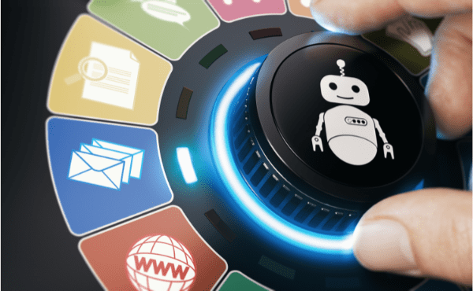
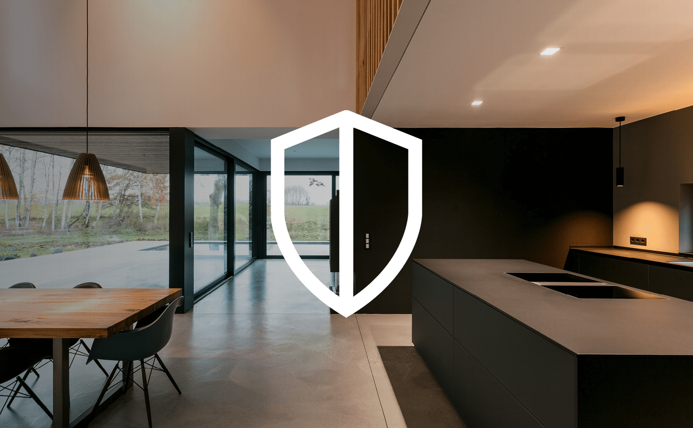

Une maison intelligente possède de nombreux avantages mais également de nombreux inconvénients. Cela dépend avant tout de la personne et de ses attentes.

Avantages :
Gain de temps énorme (exemple : les tâches répétitives tels qu’ouvrir les volets ou les fermer sont programmables et se font donc automatiquement)
Economies d’énergies (exemple : en profitant des heures creuses, nous pouvons limiter les dépenses tel que l'électricité)
Habitat mieux sécurisé (exemple : avec la détection de fumée, l’utilisation d’un dispositif de surveillance ou d'une alarme)
Aide automatisé pour les persinnes dépendantes (exemple : automatisation de certaines tâches difficiles et/ou répétitives)

Inconvénients :
Prix élevé (en moyenne entre 10 000€ et 20 000€)
Possibilité d'erreur de système (exemple : interférence et coupure d'électricité)
Incompatibilité avec certains objets selon la marque
Obsolenscence programmé de la plupart des objets connectés
Risque de cyberattaque et diminution de la protection de la vie privée (exemple : le fait que les objets soient connectés à Internet facilite l'entrée aux hackers ainsi qu'aux producteurs des objets qui peuvent récoltés nos données personelle ouvertements sans qu'on en soit avertis)